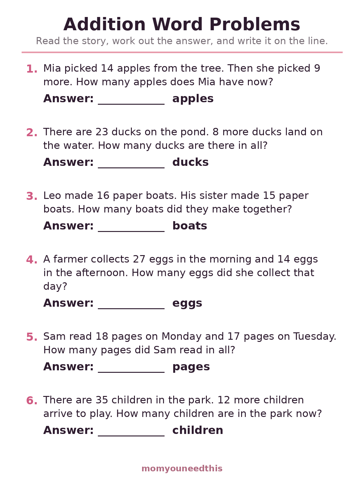
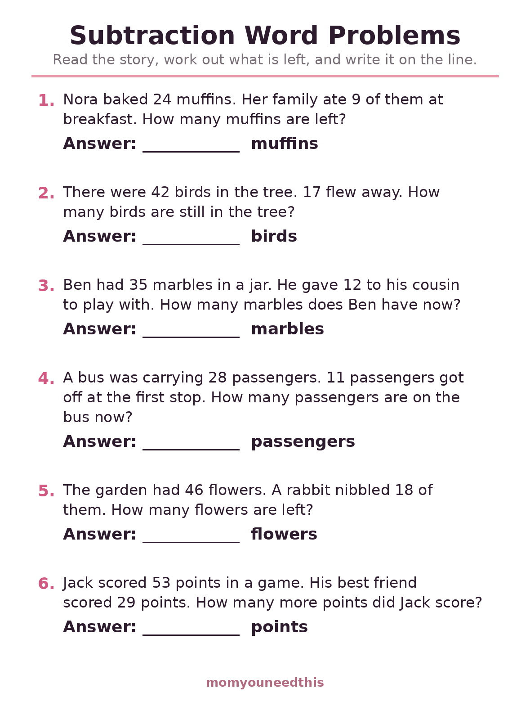
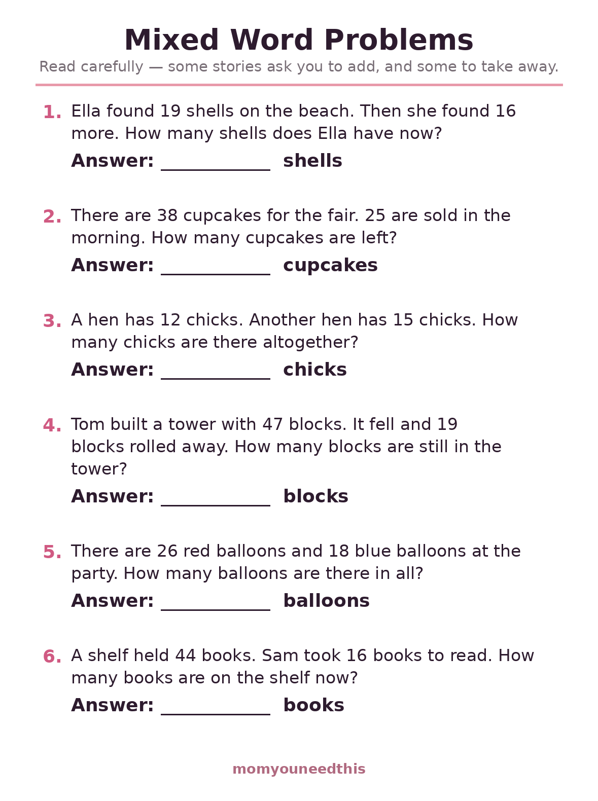

Math Word Problems for Kids Addition & Subtraction Stories with Answer Lines
Free math word problems for ages 5 to 7: short addition and subtraction stories about ducks, muffins, marbles and paper boats, each with an answer line that names the unit. Two friendly sheets that say which operation to use, then a mixed sheet that teaches your child to decide. Print at home, no signup.
Last updated: October 21, 2026
Quick Answer
These free word problem worksheets hold three printable sheets of six problems each: addition stories, subtraction stories, and a mixed sheet where your child reads the story to decide which operation it needs. Numbers stay within 50, stories run two or three short sentences, and every answer line names its unit — apples, ducks, books — so answers come out complete. Made for ages 5 to 7.
At a Glance
- Skill: Addition & subtraction word problems
- Ages: 5–7 (kindergarten–grade 2)
- Sheets: 3 (addition, subtraction, mixed)
- Problems: 6 stories per sheet, numbers within 50
- Reading level: Short sentences, early-reader friendly
- Cost: Free — print at home
➕ Addition Word Problems
Every story on this sheet joins two groups: more ducks land, more children arrive, two people's boats are counted together. Because the operation is guaranteed, your child can focus on the new part — finding the numbers inside sentences and writing a complete answer with its unit.

➕ Download Your Free Addition Word Problems
6 addition stories with numbers to 50 and an answer line on each.
⬇️ Download Free Worksheet 🖨️ Print🎁 Free printable for ages 5–7
➖ Subtraction Word Problems
These stories take away, use up, or compare: muffins get eaten, birds fly off, and one friend's score is measured against another's. Comparison stories (how many more?) are the ones children find trickiest, so one is included here while the operation is still guaranteed.

➖ Download Your Free Subtraction Word Problems
6 subtraction stories — taking away, using up, and one how-many-more comparison.
⬇️ Download Free Worksheet 🖨️ Print🎁 Free printable for ages 5–7
🔀 Mixed Word Problems
The mixed sheet removes the training wheels: nothing on the page says add or subtract, so the story itself has to tell. This is the sheet that mirrors schoolwork, and the one to repeat — print it again in a few weeks and watch the deciding get faster.

🔀 Download Your Free Mixed Word Problems
6 mixed stories — read carefully, decide the operation, then solve.
⬇️ Download Free Worksheet 🖨️ Print🎁 Free printable for ages 5–7
🌱 Reading Is Half the Math
Teachers see it every year: a child who computes beautifully stalls on word problems because the bottleneck is language, not numbers. Stories fix that by practicing the translation — words into a picture, a picture into an operation. Drawing the story, even stick ducks on scrap paper, is not a detour; for a 6-year-old it is the method. Praise the drawing and the deciding as much as the answer.
🖨️ How to Use These Worksheets
- Read it together first. Let your child read what they can; you read the rest. Understanding the story comes before touching numbers.
- Ask the two questions. What do we know? What is the story asking? Answering those out loud makes the operation obvious most of the time.
- Draw or act it out. Counters, toys or a quick sketch — a picture of the story is a legitimate solving strategy at this age.
- Finish the sentence. The answer line names the unit for a reason: '31 ducks' is a complete answer, '31' is just a number.
📖 More Math for Moms & Kids
➕ Carrying & Borrowing
For when the stories outgrow plain adding and taking away. Practice carrying.
📝 Addition Worksheets
Plain addition practice — sums to 5, 10 and 20. Keep adding.
✖️ Multiplication Worksheets
Groups and arrays — the next kind of story problem. Start multiplication.
🔢 Odd & Even Numbers
A pattern break between problem sets. Explore odd and even.
❓ Math Word Problems FAQ
What age are math word problems for?
These word problems suit ages 5 to 7 — kindergarten through grade 2. The addition sheet uses sums to about 50, the subtraction sheet stays within 50, and every story is two or three short sentences a new reader can manage with a little help.
Why do word problems feel harder than plain math?
Because they add reading and deciding to the calculating. Your child has to find the numbers, work out whether the story adds or takes away, and only then compute. That deciding step is the real skill — it is exactly what school math asks for.
How can I help my child with word problems?
Read the story together, then ask two questions before any math: what do we know, and what is the story asking? Acting the story out with toys or drawing it turns the words into a picture, and the operation usually becomes obvious.
Do the sheets say whether to add or subtract?
The first two sheets do — one is all addition, one is all subtraction, so your child can build confidence. The mixed sheet deliberately does not: reading the story to decide is the skill it practices.
Are these word problems free?
Yes — all three sheets are free to print at home, with no signup and no email.